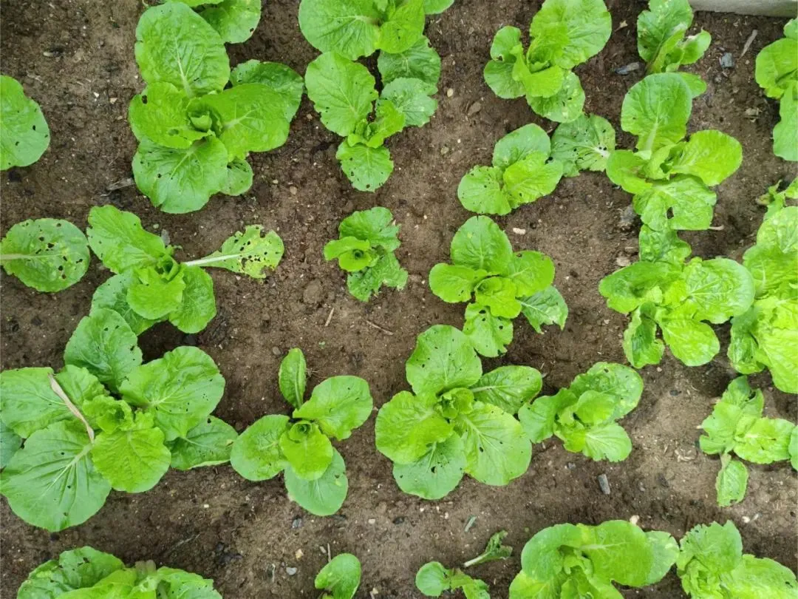

结束与开始
知识库和专栏的费用都已退完，请大家注意查收，尽量自行操作，要不然五六千人，我一个个应对，也挺费时耗力的。
还是有些读者不太清楚，所以我详细说：
一般情况下，如果你是 2022年1月1日之后付费的 ，一般来说，直接点开自己的订单，能看到“退款成功”四个字，这类退款，已退到当时支付账户（微信或支付宝等）；
如果是 2022年1月1日之前付费的 ，由于这是去年的订单，已完成结算和交税，系统无法直接退款，所以打款方式不一样，查看方式也不一样：
直接点击这个小程序： 天叙小馆 ，进入后，点“我的”，再点“零钱”，就能看到所退的全部费用。（注意，不是微信零钱！）
实在没有查到的，可以把订单E2021xxx那个复制，发给我。
... ...
大家会比较好奇一共退了多少钱。
这几年下来，全部的付费，一百多万，公众号的收益都在这了。
至于退款的原因，一个是内容行业受限的越来越多，有些话已经无法输出。即便最后发出来了，也和我最初想表达的，有差距，这样的内容，不适合收费。后续如果能顺利做好，会免费开放给大家。
我不喜欢有亏欠，清清白白地来，坦坦荡荡地走，也不失为一种洒脱。
第二个原因，是地产从业者和社会大众，这两年越来越难，我个人能做的有限，干脆就都退了。大家拿回去，给小朋友、长辈、或伴侣买份小礼物、一束花，那种收获感和满足感，会很不一样。
人，原本是用来爱的；钱，原本是拿来用的。
但现实往往本末倒置，钱被拿来爱了，人被拿来用了。所以有了过河拆桥，视钱如命。
有人说，在一个人人都相互欺骗的世界，做一个诚实的人，反而会被别人当作“害群”之马。
但，人有时候，也要仰望星空，相信一些美好的东西。
这几年，看过太多所谓的”正能量“，说句不太那个啥正确的感受：实在想吐。
其实我们要的，是纪实，而不是美化；要生活，不要艺术。这几年已经够苦了，最真实的样子值得铭记。
老人家常说“小河有水，大河满；小河无水，大河干"，我一个普通人，能收获大家这么一大票读者，是我的福分。
可惜，能做的有限。
... ...
对信息敏感的人，大概能感受到，一个时代早已转身推门离开。
公众号存在一天，我就更新一天，真不在了，那就不在吧。
大家可以到这两个公众号问：
从北京回来，隔离结束。今早，我回到了山居之所。
山居的这段时间，作息好了很多，熬夜也变少了。
开车最重要的，是学会刹车。诚然。
外出一周多，回来时，种下的菜已经长大，就是没打理，被虫儿咬了，但胜在新鲜、绿色。长得不太好看：

“安之若命”，又何尝不是面对“无可奈何”的一种坦然。 ** **
按日期浏览全部来源（同日按条目标识排序）